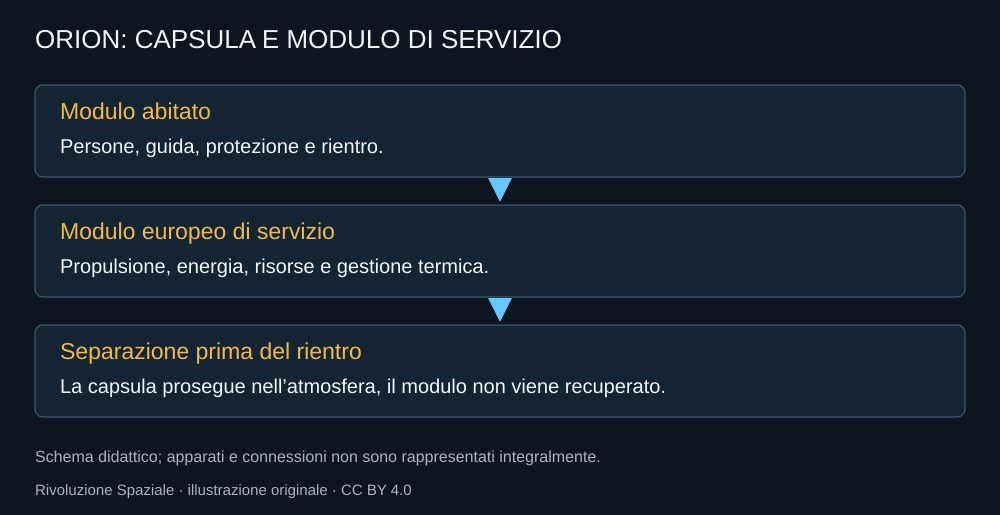

Orion è la casa dell’equipaggio durante il viaggio e il veicolo che deve riportarlo nell’atmosfera terrestre. La sua forma richiama le capsule storiche, ma il sistema comprende apparati, software e un modulo di servizio europeo. La capsula che si vede al recupero è soltanto la parte che torna.
La capsula e ciò che la sostiene
Il modulo abitato contiene gli astronauti e i sistemi necessari al volo. Il modulo di servizio fornisce propulsione, energia e risorse, poi si separa prima del rientro. I pannelli solari e gli impianti a valle devono lavorare in un ambiente diverso da quello di una stazione terrestre continuamente rifornita.

L’Europa è dentro il viaggio
Il contributo ESA non è una presenza simbolica nel logo. Il modulo di servizio svolge funzioni decisive per l’intera missione. La filiera europea comprende strutture e impianti; Thales Alenia Space Italia partecipa con componenti che includono struttura, protezione e sistemi termici e delle risorse.
Questa collaborazione obbliga a far convivere specifiche e verifiche di organizzazioni diverse. L’interfaccia fra modulo e capsula è un punto tecnico, non una linea su una cartina politica. Un problema in una funzione comune richiede accesso ai dati, responsabilità chiare e una procedura condivisa.
Vivere dentro un volume piccolo
Una capsula non è un habitat di lunga permanenza. Quattro persone devono lavorare, dormire, gestire igiene e risorse, e mantenere una capacità di risposta agli imprevisti. La disposizione degli apparati influisce sulla vita quotidiana e sull’accessibilità degli interventi.
Il viaggio Artemis II ha valore anche per questo: la verifica umana non si riduce a un sensore che misura accelerazioni. Gli astronauti osservano rumori, leggibilità delle procedure, carichi di lavoro e interazioni. Un apparato che funziona in un test isolato può essere poco pratico durante una sequenza reale.
Perché Orion non scende sulla Luna
Il lander deve muoversi fra orbita e superficie. Orion deve sostenere il viaggio e il ritorno terrestre. Tenere distinti questi ruoli evita di portare sulla superficie apparati che servono al rientro atmosferico, ma richiede incontro e trasferimento fra veicoli.
Un docking riuscito deve diventare una possibilità di passaggio sicura, con atmosfera e procedure compatibili. Le persone non attraversano semplicemente un tratto di disegno. L’interfaccia va qualificata per un’operazione nella quale anche un dettaglio di tenuta o pressione ha conseguenze.
La prova continua dopo il recupero
Quando la capsula arriva sulla nave di recupero, comincia una parte importante del lavoro: confrontare dati e hardware. Lo scudo termico di Artemis I ha mostrato che un ritorno riuscito può conservare problemi da risolvere prima del volo umano.
Orion è quindi una macchina di viaggio e una fonte di informazioni sul viaggio. La fiducia si costruisce attraverso questa seconda funzione, non soltanto attraverso la fotografia dell’ammaraggio.
Fonti pubbliche e tracce
- NASA, European Service Module. Funzioni, struttura, propulsione e contributo europeo.
- NASA, The People Bringing Orion to Life: ESM. Contributi industriali europei, compresa Thales Alenia Space Italia.
- NASA, Artemis II. Equipaggio e missione conclusa nell’aprile 2026.
- NASA, Orion Heat Shield Findings, 5 dicembre 2024. Causa della perdita di materiale e decisione sulla traiettoria Artemis II.